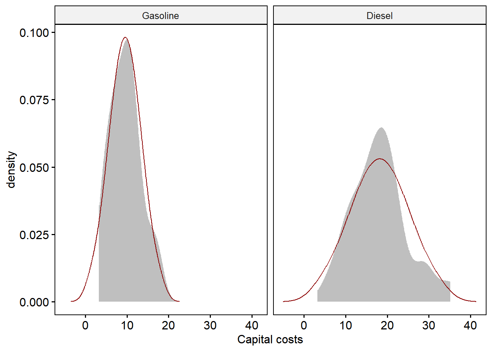

19 Normality Assumption
19.1 Univariate Normality
Univariate normality is a necessary but insufficient for multivariate normality. We can explore normality of each dependent variable in each group.18 First, we could look for univariate outliers, per the example in the reading. After that, let’s examine the kurtosis and skew estimates and plots.
At this point, we’re following Pituch and Stevens’ (and Tabachnick & Fidell’s) approach to analyze assumptions of the observed dependent-variable data. The code and interpretations can also be used with the residual scores corresponding with each dependent variable, which is addressed later on in this code. I’d actually recommend simply skipping to doing these steps with the residual data, but I’ll follow Pituch and Stevens’ approach first. The primary reason scholars suggest using the observed data is to avoid temptation of looking at the model results, such as with summary(my.fitted.model), which in R we can avoid by simply not asking for the results even though we have fit the model.
19.1.1 Identifying univariate outliers within groups
Pituch and Stevens suggested examining z-scores of each variable within each group to identify any plausible outliers. They suggested a z-score greater than 2.5 in magnitude would merit scrutiny, which is approximately equal to a two-tailed test at alpha = .01. This advice is different from that of Tabachnick and Fidell (2013), who suggest a criterion of 3.29, corresponding with an alpha = .001, but also qualify this by saying that we might change this threshold depending on the sample size, as a large sample will more likely yield outliers.19
To get standardized scores, we can use the scale() function for each variable separately.20 In the code below, we use the dplyr package to calculate the z-scores and create a dummy variable that indicates which are outliers based on the criterion Pituch and Stevens suggested.
library(tidyverse)
datz <- dat %>%
group_by(gp) %>%
mutate(y1.z = scale(y1),
y2.z = scale(y2),
y3.z = scale(y3),
outlier_uni = if_else(abs(y1.z) > 2.5 |
abs(y2.z) > 2.5 |
abs(y3.z) > 2.5, 1, 0))
datz %>% filter(outlier_uni == 1)## # A tibble: 3 × 9
## # Groups: gp [2]
## id gp y1 y2 y3 y1.z[,1] y2.z[,1] y3.z[,1] outlier_uni
## <int> <fct> <dbl> <dbl> <dbl> <dbl> <dbl> <dbl> <dbl>
## 1 9 1 29.1 15.1 3.28 3.52 1.67 -1.69 1
## 2 21 1 26.2 17.4 16.9 2.91 2.23 1.95 1
## 3 52 2 15.9 12.9 19.1 2.77 0.421 0.135 1We see three cases we could flag as outliers, all on y1. Two of these cases (Cases 9 & 21) are in Group 1; one (Case 52) was in Group 2. These z-scores are not terribly excessive—only Case 9 exceeds the criterion of 3.29. We could examine these data to see if there was a data-entry error. Let’s assume it was not and carry on by seeing if these same cases show up in our examination of multivariate normality.
19.1.2 Kurtosis and skew
We used the psych package above when we used the describeBy() function. We could simply interpret those and use the absolute value of 2 as the criterion. Looking at that, we see that on y1, Group 1 has a kurtosis exceeding the magnitude of 2.00. It is positive, indicating leptokurtosis (too much pointiness), which becomes less problematic with samples greater than 100 or so; a platykurtic skew, which has thick tails, underestimates the sample’s variance until about a sample size of 200 (Tabachnick & Fidell, 2013, p. 80, cite Waternaux, 1976). Based on the univariate kurtosis and skew estimates of y2 and y3, we do not see evidence that these two variables differ from normality within each group.
We could also use confidence intervals to determine if the kurtosis and skew are outside of an expected range that might constitute normality. The DescTools package can provide these confidence intervals; they suggest using the bootstrap estimator, bca for the confidence intervals. Here’s an example of skew with the first dependent variable only:
library(DescTools)
tapply(dat$y1,
dat$gp,
DescTools::Kurt,
method = 3 , # Use method 2 if you want the same result as SPSS
conf.level = .95,
ci.type = "bca")## $`1`
## kurt lwr.ci upr.ci
## 3.6784860 -0.1136231 9.9966050
##
## $`2`
## kurt lwr.ci upr.ci
## 0.5480051 -0.9553924 4.9379932The 3.68 kurtosis for Group 1 on this variable is within their confidence interval, suggesting it might not be enough to flag non-normality.
19.1.3 Examining univariate normality using density plots
We can examine plots of each variable, by group. First, let’s examine density plots of each variable, within each group, and compare that to the theoretical normal distribution. For this, the easiest way seems to be with the ggpubr package, which has the ggdensity() function instead of the ggplot() function we usually use.21
library(ggpubr)
dat %>%
filter(gp == 1) %>% # subset to Group 1, using dplyr.
ggdensity(x = "y1", # specify which variable.
fill = "gray50", # observed density is colored gray.
color = "white", # remove line from observed density plot
title = "Gasoline trucks") +
# I know `gp == 1` matches gasoline trucks, so I use `title = `.
# And, here's the theoretical normal density line, layered on top:
stat_overlay_normal_density(color = "darkred")
We can see that compared to a theoretical normal distribution, the distribution of y1 with the Gasoline-truck group is leptokurtic (too peaked) and positively skewed. This is consistent with the skew and kurtosis reported in the describeBy() function earlier, 1.71 and 3.68 respectively. The two outliers seem to be responsible for this bump on the right side.
We can do this for every group and every variable. Here’s the diesel group with y1.
dat %>%
filter(gp == 2) %>%
ggdensity(x = "y1",
fill = "gray50",
color = "white",
title = "Diesel trucks",
xlab = "Fuel costs") +
stat_overlay_normal_density(color = "darkred") The second group’s scores on this variable seem to come from a population with a normal distribution.22 We see a little bump on the right hand side, probably caused by that outlier we found with the z-scores.
We can also display both groups in a plot as separate panels (or facets). Here, we’re adding the facet.by = argument from this function (which is specific to this function, in looking at ?ggdensity), with the group variable in our data, gp, plot the two groups next to each other in their respective panel of the plot. Then, we’re making the label of the panel more informative with panel.labs = list(gp = c("Gasoline", "Diesel")), where the gp here is, again, the name of the group variable in our data set.
dat %>%
ggdensity(x = "y1",
fill = "gray50",
color = "white",
xlab = "Fuel costs",
facet.by = "gp",
panel.labs = list(gp = c("Gasoline", "Diesel")) ) +
stat_overlay_normal_density(color = "darkred")
The one problem with this layout is that the y-axis is on the same scale for both variables, which seems to stretch the y-axis scale so it appears as though the second group is excessively leptokurtic. However, by comparing this to the superimposed normal curve, we see it is not too peaked.
Let’s look at the other two variables:
dat %>%
ggdensity(x = "y2",
fill = "gray50",
color = "white",
xlab = "Repair costs",
facet.by = "gp",
panel.labs = list(gp = c("Gasoline", "Diesel")) ) +
stat_overlay_normal_density(color = "darkred")
Although the observed density plots look truncated, with some fat tails, we do see support for the conclusion that the sample data are drawn from a population of normally distributed data.
dat %>%
ggdensity(x = "y3",
fill = "gray50",
color = "white",
xlab = "Capital costs",
facet.by = "gp",
panel.labs = list(gp = c("Gasoline", "Diesel")) ) +
stat_overlay_normal_density(color = "darkred")
These plots also suggest the sample data seem to come from a population of normally distributed data.
19.2 Examining univariate normality using quantile-quantile plots
Quantile-quantile plots are probably the most useful for examining normality. They’re a little less work than the density plots, too. If you want a refresher on what quantiles are and how Q-Q plots are generated, Josh Starmer has a couple of videos: one on quantiles, linked to here, and one on Q-Q plots, linked to here.
Here’s a plot of the first group with the first variable:
dat %>%
filter(gp == "1") %>%
ggplot(aes(sample = y1)) +
stat_qq() +
stat_qq_line() +
scale_x_continuous("Norm quantiles") +
scale_y_continuous("Sample quantiles") +
labs(title = "Gasoline trucks")
We see the effect of those two outliers on the plot in Group 1 (gasoline trucks). Their scores are much higher than we would expect if the data were from a normal distribution. Without them, it would look normal.
Here’s the second group:
dat %>%
filter(gp == "2") %>%
ggplot(aes(sample = y1)) +
stat_qq() +
stat_qq_line() +
scale_x_continuous("Norm quantiles") +
scale_y_continuous("Sample quantiles") +
labs(title = "Diesel trucks")
In Group 2, y1 looks normal enough, with most of the scores very close to the line, though there is one observation with a score that is unexpectedly high.
We could use ggplot for the other four plots. Let’s look at a function from the car package that also provides some error bands:
19.2.1 Univariate Q-Q plots from other packages
The car package’s qqPlot() is convenient in that it includes an error band for interpreting points that are off the line, and it labels outliers. This approach requires the input be a matrix or vector (not a data frame, as ggplot requires). For this, we need to change our group variable to be numeric and create a matrix with group and our dependent variables:
ym <- cbind(gp = as.numeric(dat$gp), dat[, 3:5])
library(car)
car::qqPlot(ym[,2], ylab = "Y1", groups = ym[,1])
# For the other two variables:
# car::qqPlot(ym[,3], ylab = "Y2", groups = ym[,1])
# car::qqPlot(ym[,4], ylab = "Y3", groups = ym[,1])This also labels the row number of the observations that might be flagged as outliers. We see results that are consistent with the above plots. This was only with the first dependent variable; we’d use the same code with the other two.
Another package we could use is ggpubr, with the ggqqplot() function. We used this package with our density plots. This is convenient because we don’t have to change the data into matrix format:
Here’s are all the plots with this package:
library(ggpubr)
dat %>%
filter(gp == "1") %>%
ggqqplot(x = "y1",
title = "Gasoline trucks' fuel costs") 


This one does not label the outliers, which is why I like the car package’s version better.
If I were in a hurry and I needed to assess univariate normality, I’d simply look at the Q-Q plots from the car package. If I wanted to publish something pretty, I’d use ggplot or ggpubr’s ggqqplot, and I’d display the density plots with the normal distribution layered over them for comparison.
19.2.2 Statistical tests of univariate normality
There are also statistical tests of normality. The Shapiro–Wilk test seems to be well regarded. To demonstrate, let’s examine y1 with Group 1:
##
## Shapiro-Wilk normality test
##
## data: g1$y1
## W = 0.83672, p-value = 9.555e-05The p-value below our critical alpha of .05 indicates that for Group 1, we can reject the null hypothesis that y1 is from a normal distribution. We don’t like this result.
Let’s look at Group 2 on this same variable:
##
## Shapiro-Wilk normality test
##
## data: g1$y2
## W = 0.96282, p-value = 0.2623The same test with Group 2 did not reject the null hypothesis, which indicates we do not have evidence to suggest y1 differs from normality. We would do this test by-group for the other two variables and hope we got non-significance.23
19.3 A caution about statistical tests of statistical assumptions
As with most (or all) statistical tests of statistical assumptions, we are arguing for the null hypothesis, which is kind of antithetical to null-hypothesis statistical testing but that’s how it seems to be done.
With small sample sizes, statistical tests like Shapiro-Wilk show non-significance even when the data are not normal. With large sample sizes, they’re too sensitive to deviations from normality. With this, statistical tests of normality should not be the primary source of evidence for evaluating this assumption.
19.4 Mahalanobis Distance and Multivariate Outliers
We can calculate each observation’s Mahalanobis distance. I think of this as the observation’s degree of weirdness compared to the rest of the data. This is a function of leverage, which was addressed in multiple regression.
Mahalanobis distances are in squared units, so we use a chi-square distribution instead of a normal distribution with quantiles in our Q-Q plots. The mahalanobis() function from Base R has three arguments: the matrix of multivariate variables, the means of those those variables (in center=), and the covariance matrix of those variables.24 We’ll create a matrix of our dependent variables for the first argument and use the colMeans() and cov() functions to get the latter two.
dvs <- cbind(dat[,c("y1","y2","y3")])
distances <- mahalanobis(dvs,
center = colMeans(dvs),
cov = cov(dvs))Each observation has a multivariate distance, so let’s save it to the data frame:
We might notice that for some observations, they have really high Mahalanobis distance values. We could sort them from high to low to see if there is a quick descent before it then levels out:
## [1] 20.369430 13.881471 12.473991 11.967188 9.750828 5.731465 5.132105 4.292636 3.937175
## [10] 3.885500 3.418971 3.413827 2.976672 2.950409 2.940999 2.823275 2.647751 2.496250
## [19] 2.491660 2.47209519.4.1 Outliers
There is a standard way to see if they are outliers. We calculate the p-value of that Mahalanobis distance, from a chi-square distribution with \(p-1\) degrees of freedom (where p = number of dependent variables), and use \(p < .001\) as a criterion for identifying an outlier.
Let’s flag any cases with a p-value lower than our alpha = .001 criterion. In this code, we’re using ifelse() to dummy code any cases with criterion as 1 and 0 otherwise. Then, we’re requesting rows of the data that have a value of 1 on this new variable.
dat$outlier <- ifelse(dat$p < .001,
1, # the case gets a 1 if p < .001
0) # otherwise, the value on this new variable is 0
# We can see two outliers here:
dat[dat$outlier == 1, ]## id gp y1 y2 y3 distancesraw p outlier
## 9 9 1 29.11 15.09 3.28 20.36943 3.774282e-05 1
## 21 21 1 26.16 17.44 16.89 13.88147 9.675577e-04 1Not surprisingly, these are the two pains in the neck in our univariate analysis. Out liars, out!
The Mahalanobis distances are in squared units. The car package has a function we can use for this to generate a kind of Q-Q plot. Instead of a normal distribution of quantiles on the X axis, we can specify a chi-squared distribution. Everitt and Hothorn (2011) use similar procedures to obtain the same type of plot.
library(car)
car::qqPlot(distances,
distribution = "chisq", df = mean(distances),
lwd = 1,
grid = FALSE,
main = "Multi-normal Q-Q Plot on Raw Data",
xlab = expression(chi^2 * " quantiles"),
ylab = expression("Mahalanobis distances "^2))## [1] 9 2119.4.2 Mahalanobis Distance using Residuals
Many scholars point out that the normality assumption is really about the residuals of the model. Let’s fit our MANOVA model without examining the results and save the residuals to the data frame, then conduct this same approach we did above with Mahalanobis distance:
dvs <- cbind(dat$y1, dat$y2, dat$y3)
man.mod <- manova(dvs ~ gp, data = dat)
dat[, c("res1", "res2", "res3")] <- man.mod$residuals
resids <- cbind(dat[,c("res1", "res2", "res3")])
distances <- mahalanobis(resids,
center = colMeans(resids),
cov = cov(resids))
dat$distances <- distances
dat$p <- pchisq(distances,
df = (ncol(resids)-1), # df is number of variables - 1
lower.tail=FALSE)
dat$outlier <- ifelse(dat$p < .001, 1, 0)
dat[dat$outlier == 1, ]## id gp y1 y2 y3 distancesraw p outlier res1 res2 res3 distances
## 9 9 1 29.11 15.09 3.28 20.36943 1.989997e-05 1 16.89139 6.9775 -6.310278 21.64958Now, we see that Case 9 is the only outlier. Let’s look at the multivariate analogue to the univariate Q-Q plot, now with residuals:
library(car)
car::qqPlot(distances,
distribution = "chisq", df = mean(distances),
lwd = 1,
grid = FALSE,
main = "Multi-normal Q-Q Plot on Residuals",
xlab = expression(chi^2 * " quantiles"),
ylab = expression("Mahalanobis distances "^2))
## [1] 9 21We see a very similar shape to what we saw with the raw data. It looks like we will not be able to claim we have met the assumption of normality. However, we should really be examining multidimensional normality within each group, not the entire data set. Let’s do that:
19.4.3 Multivariate residual Q-Q plot by group
With the residuals, we can use the groups = argument to specify the group. This requires that the matrix have a column that is the group variable.
library(car)
distances_gp <- cbind(gp = as.numeric(dat$gp), distances)
car::qqPlot(distances_gp[, -1],
distribution = "chisq", df = mean(distances_gp[, -1]),
groups = distances_gp[,"gp"],
lwd = 1,
grid = FALSE,
main = "Multi-normal Q-Q Plot on Residuals",
xlab = expression(chi^2 * " quantiles"),
ylab = expression("Mahalanobis distances "^2))
Clearly, Case 9 is a candidate for removal and seeing if the results will lead to the same statistical conclusion if the case were retained.
19.5 Statistical Tests of Multivariate Normality
Just as there are statistical tests of univariate normality, there are of multivariate normality. And, just as was the case with their univariate counterparts, the statistical test is sensitive to sample size, just as any test is. With this, if we have a large sample size, we will likely have a statistical significance when the divergence from normality is only negligible. In other words, this source of evidence should be used in conjunction with plots.
Here is the mshapiro.test() function from the mvnormtest package. This function requires the data be arranged as rows instead of columns, so we’ll use the transpose function, t() within the test.
First, let’s separate the dependent variables by group. Here, we’re using their respective residuals, but many authors simply use the dependent variables on the grounds that researchers would be tempted to analyze the results of their fitted model (which is needed to get the residuals) before analyzing the assumptions.
dvs.gp1 <- subset(dat, gp == 1, select = c("res1", "res2", "res3"))
dvs.gp2 <- subset(dat, gp == 2, select = c("res1", "res2", "res3"))
library(mvnormtest)
mshapiro.test( t(dvs.gp1) )##
## Shapiro-Wilk normality test
##
## data: Z
## W = 0.81141, p-value = 2.767e-05##
## Shapiro-Wilk normality test
##
## data: Z
## W = 0.94576, p-value = 0.2384We see results that are consistent with our outliers and plots. The multivariate normality assumption was not met because Group 1 had a multivariate distribution that was significantly different from normal.
19.6 Homogeneity of Covariance
Box’s M test can be conducted using the box_m() function from the rstatix package, the boxM() function from the biotools package, or the boxM() function from the heplots package. Let’s arbitrarily use the latter:
##
## Box's M-test for Homogeneity of Covariance Matrices
##
## data: dat[, c("y1", "y2", "y3")]
## Chi-Sq (approx.) = 30.543, df = 6, p-value = 3.098e-05This assumption was not met. If we had a balanced design, this might not be an issue. Tabachick and Fidell state that Box’s M test tends to be too sensitive, but in this case, the violation seems to be undeniable.
One thing we could do is examine the covariance matrices for each group, and see whether the smaller group has the larger variance-covariance, which in turn would lead to overly lenient estimations of statistical significance and inflated Type I errors.
Here are the n-sizes:
##
## 1 2
## 36 23## [1] 1.565217Group 1 (n = 36) is over 1.5 times larger than Group 2 (or, Group 2 is about two-thirds as big as Group 1). If we see that Group 2 has larger values in the covariance matrix, our MANOVA test statistics will err on the side of leniency, risking Type I error rate inflation. On the other hand, if Group 1 has larger covariance, we err on the side of conservation, risking loss of statistical power. For credibility in our statistical conclusions, the latter scenario is preferable. Note that if we had equal group sizes, MANOVA is pretty “robust” in its statistical tests; here, we don’t.
dat1 <- subset(dat, gp == 1)
dat2 <- subset(dat, gp == 2)
covm1 <- cov(dat1[, c("res1", "res2", "res3")])
covm2 <- cov(dat2[, c("res1", "res2", "res3")])
round(covm1, 1)## res1 res2 res3
## res1 23.0 12.4 2.9
## res2 12.4 17.5 4.8
## res3 2.9 4.8 14.0## res1 res2 res3
## res1 4.4 0.8 2.4
## res2 0.8 25.9 7.7
## res3 2.4 7.7 46.7The pattern is not consistent in terms of which group has larger variances or covariances. With y1, Group 1 has larger variance (23.0 vs 4.4); with y2, there might be similar variances in the two groups (17.5 and 25.9); with y3, there is lower variance in Group 1 (14.0 vs 46.7). And, we haven’t even compared the covariances, which also seem to differ. What do we do?
Boiling each of these covariance matrices down to a single number will be helpful in identifying which group has higher variance, which in turn is important for determining if our violation of this assumption will result in a more conservative or more liberal statistical conclusion. Pituch and Stevens used SPSS, which included the determinant of the covariance matrix for each group in its output. Our Box test output did not provide this, but we can use the determinants of the by-group residual covariance matrices to accomplish the same thing:
## [1] 3172.914## [1] 4860.31## [1] 1.531813The generalized variance of the smaller group is 1.5 times that of the larger group. This suggests that the test will be biased to show an effect when there might not be one—that is, increasing Type I error. This is bad news because if we find statistical significance, we won’t know if it is because of population differences or because of this bias.
19.7 Conclusions about our statistical assumptions
The statistical assumptions of multivariate normality and homogeneity of covariance were not met with this data set. Pituch and Stevens recommend transforming the data, as would Tabachnick and Fidell. Other scholars (such Curran and Hancock in their podcast, linked to here) do not recommend data transformations but instead recommend robust standard errors be used. We’ll take the robust approach in this example.
A shortcut is to fit an ANOVA for each dependent variable and then examine the plots. That approach would also be examining the normality of the residuals rather than the raw data, which many scholars believe is more appropriate.↩︎
We can use the
qnorm()function to get the critical value of z at a probability level, such as at p = .01:abs(qnorm(p = .01/2, lower.tail=TRUE)) = 2.58.↩︎This standardization can also be in a single line of code, as in
apply(dat[, c("y1", "y2", "y3")], 2, scale).↩︎Alternatively, we could use
dat %>% filter(gp == 1) %>% ggplot(aes(x = scale(y1) )) + geom_density(fill = "wheat", color = "white") + stat_function(fun = dnorm)if we did not want to use the package.↩︎Note that we’re using the term sample and population here because we’re assuming our dependent variables are random (rather than fixed) variables because the cases are randomly sampled from the population.↩︎
We could also fit the models and conduct this test on the residuals.↩︎
Can also use the
mahalanobis_distance()function in the rstatix package.↩︎